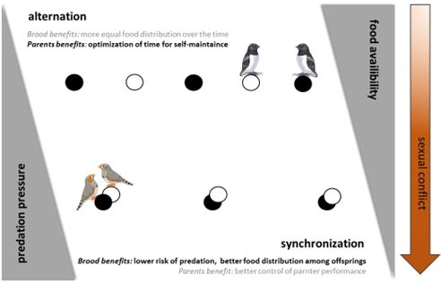
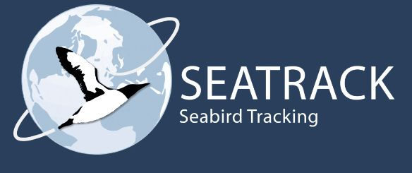

Projects
Ongoing projects
Interested in collaboration? Contact me: katarzyna.wojczulanis-jakubas@ug.edu.pl
Being interested in various topics and working with great people and different systems (sensu animal species, habitats, methodology - experiment vs obserations/field vs lab, etc), I am currently involved in quite a few different projects. Some of the projects are quite distinct and short term, with simple questions that once answered, they close the project on my side (at least temporarily, they may reopen in the future). Other projects are more complex and last longer. Here, an answer to one question raises another question, and a project goes on and on. Then, at certain point, projects get connected (see the network below) and a new line of research emerges. This is (thankfully) an endless process (at least at a human timeline scale;)
Each projects (usually) ends with a publication, so the list of those presents the complete list of so far asked research questions. Below is a short list of ongoing projects, and only those are listed that are somehow formally settled, having website and/or regular funding and/or a defined deadline for the project report. Other stuff may be described here in a future;)
ACORD
PI: Katarzyna Wojczulanis-Jakubas: Avian COoRDination of parental activities - patterns and mechanisms. A new project that has just got the financial support from NCN.
SUMMARY OF THE PROJECT: Parental care in birds has long been viewed in the context of sexual conflict, i.e. a tug-of-war between the parents, where each of the parent tries to maximize breeding success with the lowest possible cost on his/her side, even if that is to be achieved by overexploiting partner. Such interpretation, however, does not explain all observed patterns of parental care, especially coordinated performance of parental activates In fact, growing number of studies demonstrates that avian parents do coordinate their parental activity, and that coordination may positively affect the breeding outcome of the pair. It thus suggests that parents cooperation (apart from sexual conflict) may be an evolutionary power shaping parental care in birds. What are ecological drivers of parental coordination in birds, and what are proximate mechanisms regulating the coordination are now open and very exigent questions. The main aim of our project is to answer these questions. Wewill apply modern statistical techniques (meta-analyses) to examine possible ecological factors affecting patterns/level of parental coordination. We expect here, that of the most important ecological factors influencing parental coordination is food availability and predator pressure (with parents coordinating better in less favourable conditions, low food availability, high predator pressure). To examine proximate mechanisms of parental coordination, we will focus on a seabird species, the little auk and we will examine concentration of three hormones: corticosterone (CORT), prolactin (PRL), and mesotosin (MT), which concentration we will measure at various stages of little auk breeding. It is already well known that CORT and PRL play important role in regulation of parental efforts while oxytocin-like hormones (i.e. mesotocin) regulates strength of pair bond, thus we expect that the level of these hormones in both partners is related to their parental coordination. Examining these endocrine mechanisms in a seabird species will not only make the project tasks feasible (relatively big body size allowing for extensive blood sampling for hormones, the little auk parents already reported to coordinated the chick provisioning, etc) but will also allow to recognize true range and overall causality of the observed patterns of parental coordination in birds (most work is performed on small body-sized species). Finally, we will examine mechanistic of parental coordination across species. For that purpose we will utilize literature on a standard handicap experiment (a bird is treated in a way that distorts its behaviour, e.g. by clipping a flight feather), where we will analyse how the handicap of one partner affects parental performance of the other, and so the whole pair. We expect here that response of partner of the handicapped parent depends on the current level/pattern of the parental activity/pair bond, and we assume that this all can be considered as a proxy for prediction on parental coordination in given species. For example, if parental coordination is somehow conditional on partners performance, the handicap experiment should affect parental effort of the partner (decreasing it) and so the pair coordination. If parents coordination is fixed, however, the handicap should not change behaviour of untreated parent, etc. Owing to the broad and complex approach approach (meta-analyses and standard field methods - observations and experiments), the project promises to end up with a general model explaining parental coordination in birds, this way significantly expanding our knowledge on parental care in birds, and so developing evolutionary and behavioural ecology.

LAPSE
PI: Dariusz Jakubas (I am a co-worker here). What really matters for a High-Arctic zooplanktivorous seabird foraging in rapidly changing environment - prey size or energy content?
Seatrack
International network of scientist led by by a project-group with representatives from the Norwegian Polar Institute (NPI), Norwegian Institute for Nature Research (NINA) and Norwegian Environment Agency (NEA). The aim of the project is to map the non-breeding distribution of seabirds breeding in colonies encircling the North Atlantic. This is a large scale project (different seabirds species, over large geographical area) bringing truely breaking through results (many papers have been already published presenting detailed fidnings on specific scientific questions, some in a special issue of Marine Ecology Progress Series, and here is also the awesome app you can use to check non-breeding distribution of a species). The big step forward is done owing to the usage of small light-sensitive devices (geo-locators) deployed on birds. Based on those we can estimate birds position during the migration and wintering period (ten years ago we had no idea where these birds go for the winter!). Me with my reasearch group deliver data for the little auks from Hornsund (S Spitsbergen), where we perform a long-term studies on breeding ecology of the species. Recently, owing to the LAPSE project we also deployed loggers on birds in Magdalenefjorden (N Spitsbergen), to retrive them in the summer 2024.

Arctox
International network of scientist for examinig mercury contamination of N Altantic seabirds (I am a co-worker here)
PHD project (Anna Osiecka, I am supervisor here): “Vocal behaviour and information coding in a pelagic Arctic seabird, the little auk (Alle alle)”
PHD project (Kristin Piening, I am supervisor here): “Sex differences in foraging ecology of the little auk Alle alle”